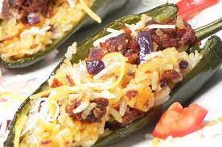

Chorizo and Rice-Stuffed Poblano Peppers

Roasted poblano chiles filled with spicy chorizo and rice that are cooked to perfection.
Ingredients
- 1 pound chorizo sausage
- 1 (10 ounce) can diced tomatoes with green chile peppers
- 1 small onion, diced
- 1 small carrot, grated
- 1 small stalk celery, grated
- 2 tablespoons minced garlic
- 1 teaspoon Worcestershire sauce
- 1 teaspoon adobo seasoning
- 1 teaspoon dried basil
- 1 teaspoon dried cilantro
- 1 cup cooked long-grain rice
- 1 tablespoon chopped fresh parsley
- olive oil cooking spray
- 4 poblano peppers, halved and seeded
- ½ cup water
- ⅛ cup shredded Cheddar cheese
- ⅛ cup shredded mozzarella cheese
- ⅛ cup shredded pepper Jack cheese
Directions
- Heat a large skillet over medium-high heat. Cook and stir chorizo in the hot skillet until browned and
crumbly, 5 to 7 minutes. Drain and discard grease.
- Add tomatoes, onion, carrot, celery, garlic, Worcestershire sauce, adobo, basil, and cilantro to the skillet
with the chorizo. Simmer for 5 minutes. Add rice and simmer for 5 minutes more. Remove from heat, add fresh
parsley, and let rest.
- Preheat the oven to 350 degrees F (175 degrees C). Spray a baking dish with cooking spray.
- Stuff each poblano pepper half with the chorizo mixture; lay in the baking dish. Add water to the bottom of
the dish. Loosely cover with aluminum foil.
- Bake in the preheated oven until peppers are tender but still firm, about 1 hour. Remove foil and sprinkle
peppers with Cheddar, mozzarella, and pepper Jack cheeses.
- Turn on the broiler; broil peppers until cheese is brown and bubbly, 3 to 4 minutes.
Nutrition Facts
Per Serving: 661 calories; protein 33.5g; carbohydrates 25g; fat 47.3g; cholesterol 110.3mg;
sodium 1791.7mg.
Recipe found here